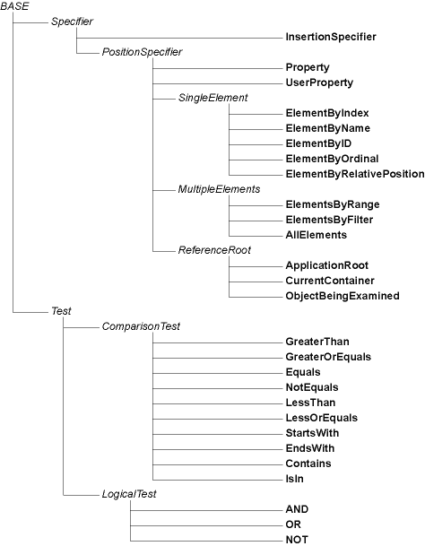

About references
An Apple Event Object Model query (a.k.a. "reference") essentially consists of a linked list made up of one or more Apple event descriptors (AEDescs) of, for the most part, typeObjectSpecifier. Object specifiers are used to identify properties and elements in the application's AEOM. Each object specifer contains four fields:
- want
- four-char-code indicating desired element(s)'s class code (e.g.
'docu'= document), or'prop'if it's a property specifier - from
- an object specifer identifying container object(s)
- form
- four-char-code indicating how the element(s) should be selected (by index [
'indx'], name ['name'], etc.), or'prop'if it's a property specifier - seld
- selector data (e.g. in a by-name specifier, this would be a string)
The Apple Event Manager provides several ways to construct object specifiers and assemble them into a complete reference, but these are all rather verbose and low-level. The aem layer hides all these details behind an object-oriented wrapper that uses chained property and method calls to gather the data needed to create object specifiers and assemble them into linked lists.
For example, consider the reference text of document 1. The code for constructing this reference using a relatively low-level bridge, in this case RubyAEOSA, would be:
ref = OSX::AEDesc.null
ref = OSX::AEDesc.record({
'want' => OSX::AEDesc.new('type', 'docu'),
'from' => ref,
'form' => OSX::AEDesc.new('enum', 'indx'),
'seld' => 1,
}).coerce('obj ')
ref = OSX::AEDesc.record({
'want' => OSX::AEDesc.new('type', 'prop'),
'from' => ref,
'form' => OSX::AEDesc.new('enum', 'prop'),
'seld' => OSX::AEDesc.new('type', 'ctxt'),
}).coerce('obj ')
p ref
#<AEDesc:0x57594 type='obj '>(The Apple Event Manager API is even lower-level and more verbose.)
This code works by creating each AEDesc of typeAERecord in turn, populating it, then coercing it to typeObjectSpecifier. Each AEDesc is nested within the next to form a linked list of object specifier records; the last (innermost) descriptor in the finished list indicates the reference's root object in the AEOM (in this case, the application object, which is represented by a null descriptor).
Now, compare the above with the aem equivalent:
[[[AEMApp elements: 'docu'] at: 1] property: 'ctxt']As you can see, aem still uses low-level four-character codes to identify the text property and document class, but is otherwise a high-level object-oriented API. Once again, each reference begins with a root object, in this case AEMApp. New aem specifiers are constructed by method calls; each call returning a new specifier object whose own methods can be called, and so on. This allows clients to build up a chain of aem specifier objects that aem can later pack into AEDescs for sending to applications.
One more thing to notice: in aem, specifying a class of elements and indicating which of those elements should be selected are performed by separate method calls, although the information provided will eventually be packed into a single AEDesc of typeObjectSpecifier. This two-step approach makes it easier to integrate aem with the higher-level appscript bridge, which also uses two calls to construct element specifiers (one to specify the element class, e.g. -document, and another to specify the selection, e.g. -at: 1).
Note that [AEMApp elements: 'docu'] is itself a valid reference, identifying all the document elements of the application class. You do not have to call an explicit all selector (indeed, none is provided) as aem automatically handles the details for you. Aem even allows for some convenient shorthand, e.g. writing:
[[[AEMApp.elements: 'docu'] byTest: ...] first]is equivalent to writing:
[[[[AEMApp.elements: 'docu'] byTest: ...] elements: 'docu'] first]This allows clients to specify the first document that matches the given condition without having to specify the element class a second time. In AppleScript, the equivalent to this is:
first document whose ...which is short for:
first document of (documents whose ...)(Again, this additional behaviour primarily exists to serve the syntactically sugared appscript layer.)
Reference forms
Aem defines a number of classes representing each of the AEOM reference forms. There are nine AEOM reference forms:
- insertion location
- property
- user property
- element by absolute position (index or ordinal)
- element by name
- element by id
- element by relative position
- elements by range
- elements by test
Each of these reference forms is represented by a different aem specifier class, apart from the absolute position form which is represented by three different classes according to the kind of selector used: a numerical index (e.g. 1, -3), a named ordinal identifying a single element (first, middle, last, any), or a named ordinal identifying all elements (all).
The following diagram shows the aem reference class hierarchy (slightly simplified for legibility); concrete classes are shown in bold:

Note that the user shouldn't instantiate these classes directly; instead, aem will instantiate them as appropriate when the client calls the methods of other aem reference objects, starting with the AEMApp, AEMCon and AEMIts objects that form the root of all aem references.
In fact, it really isn't necessary to remember the reference class hierarchy at all, only to know which concrete classes implement which methods. All user-accessible properties and methods are defined by just four superclasses:
AEMQuery- Defines comparison and hashing methods. See
base.h. AEMPositionSpecifierBase- Defines methods for identifying properties and all elements, insertion locations, elements by relative position. Also defines comparison and logical test methods for use in constructing its-based references. See
specifier.h. AEMMultipleElementsSpecifierBase- Defines methods for identifying specific elements of a multi-element reference. See
specifier.h. AEMTest- Defines logical test methods for use in constructing its-based references. See
test.h.
Base classes
Basic methods
AEMQuery -- Base class for all reference form and test clause classes.
-(unsigned)hash -- aem references can be used as dictionary keys
-(BOOL)isEqual:(id)object -- aem references can be compared for equalityMethods for all position specifiers
PositionSpecifier < Specifier -- base class for all property and element
reference forms (i.e. all forms except insertion location)
start
Result : AEMInsertionSpecifier
end
Result : AEMInsertionSpecifier
before
Result : AEMInsertionSpecifier
after
Result : AEMInsertionSpecifier
property(code)
code : str -- four-char property code, e.g. 'pnam'
Result : AEMProperty
user_property(name)
name : str
Result : AEMUserProperty
elements(ccode)
code : str -- four-char class code, e.g. 'docu'
Result : AEMAllElements
previous(code)
code : str -- four-char class code
Result : AEMElement
next(code)
code : str -- four-char class code
Result : AEMElement
-- Note: following methods are for use on
its-based references only
gt(val) -- self is greater than value
val : anything
Result : AEMTest
ge(val) -- self is greater than or equal to value
val : anything
Result : AEMTest
eq(val) -- self equals value
val : anything
Result : AEMTest
ne(val) -- self does not equal value
val : anything
Result : AEMTest
lt(val) -- self is less than value
val : anything
Result : AEMTest
le(val) -- self is less than or equal to value
val : anything
Result : AEMTest
starts_with(val) -- self starts with value
val : anything
Result : AEMTest
ends_with(val) -- self ends with value
val : anything
Result : AEMTest
contains(val) -- self contains value
val : anything
Result : AEMTest
is_in(val) -- self is in value
val : anything
Result : AEMTest
and(*operands) -- equivalent to self.eq(True).and(*operands)
operands : Test/Test
Result : AEMTest
or(*operands) -- equivalent to self.eq(True).or(*operands)
operands : Test/Test
Result : AEMTest
not
Result : AEMTest -- equivalent to self.eq(True).notMethods for all multi-element specifiers
MultipleElements < PositionSpecifier -- base class for all multi-
element reference forms
Methods:
first
Result : AEMElement
middle
Result : AEMElement
last
Result : AEMElement
any
Result : AEMElement
by_index(key)
key : integer -- normally an integer, though some apps may
accept other types (e.g. Finder accepts a MacTypes::Alias)
Result : AEMElementByIndex
by_name(key)
key : string -- the object's name
Result : AEMElementByName
by_id(key)
key : anything -- the object's unique id
Result : AEMElementByID
by_range(start, stop)
start : Element -- an app- or con-based reference
stop : Element -- an app- or con-based reference
Result : AEMElementByRange
by_filter(test)
test : Test -- an its-based reference
Result : AEMElementsByFilterMethods for all test clause classes
Test < BASE -- represents a comparison/logic test
Methods:
and(*operands) -- apply a logical 'and' test to self and
one or more other operands
*operands : Test -- one or more comparison/logic test
objects
Result : AEMTest
or(*operands) -- apply a logical 'or' test to self and one
or more other operands
*operands : Test -- one or more comparison/logic test
objects
Result : AEMTest
not
Result : AEMTest -- apply a logical 'not' test to selfConcrete classes
Insertion location reference form
InsertionSpecifier < Specifier -- refers to insertion point before or after/at
start or end of element(s); e.g. ref.beforeProperty reference forms
Property < PositionSpecifier -- refers to a property (whose value
may be a basic type, application object or reference);
e.g. ref.property('ctxt')
UserProperty < PositionSpecifier -- refers to a user-defined property
(typically in an OSA applet); e.g. ref.user_property('myVar')Single element reference forms
ElementByIndex < SingleElement -- refers to a single element in the referenced
container object(s) by index; e.g. ref.by_index(3)
ElementByName < SingleElement -- refers to a single element in the referenced
container object(s) by name; e.g. ref.by_name('Documents')
ElementByID < SingleElement -- refers to a single element in the referenced container
object(s) by unique id; e.g. ref.by_id(3456)
ElementByOrdinal < SingleElement -- refers to first, middle, last or any element in
the referenced container object(s); e.g. ref.first
ElementByRelativePosition < SingleElement -- refers to the previous or next element
of the given class in the referenced container object(s);
e.g. ref.next('cpar')Multiple element reference forms
ElementsByRange < MultipleElements -- refers to a range of elements
in the referenced container object(s) (including start and
end points); e.g. ref.by_range(AEM.con.elements('cpar').by_index(2),
AEM.con.elements('cpar').last)
ElementsByFilter < MultipleElements -- refers to all elements in the
referenced container object(s) that fulfill a given condition;
e.g. ref.by_filter(AEM.its.name.startswith('a'))
AllElements(MultipleElements) -- refers to all elements of
the given class in the referenced container object(s);
e.g. ref.elements('docu')Tests
The Test class represents a comparison test or logical test, and defines methods for composing additional logical tests on top of these. Each kind of test clause is represented by a different subclass of the main Test class. The details are not that important, however, so they're not listed here.
Reference Roots
ApplicationRoot < PropertySpecifier -- AEM.app returns an instance of
this class
CurrentContainer < PropertySpecifier -- AEM.con returns an instance of
this class
ObjectBeingExamined < PropertySpecifier -- AEM.its returns an instance
of this class